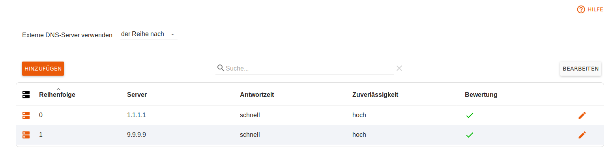

Deutsch | English
eBlocker Hilfe > Wissensdatenbank > eBlocker Menü
eBlocker Base ✓ / eBlocker Pro ✓ / eBlocker Family ✓
Diese Seite ist weiter unterteilt in die folgenden Abschnitte:
Wenn Sie diese Funktion aktivieren, können Sie die DNS Anfragen über Ihren eBlocker an eine Liste von verschiedenen DNS Servern verteilen oder über des Tor-Netzwerks auflösen lassen.
eBlocker Pro und Family Kunden profitieren außerdem nach der Aktivierung dieser Funktion von den Domain Blockern des eBlockers.
Ihnen stehen dafür drei verschiedene Optionen zur Verfügung.
Internet Provider
Hier wird der DNS Server verwendet, welchen Sie in Ihrer Router Konfiguration hinterlegt haben.
Tor-Netzwerk (DNS Auflösung erfolgt anonym)
Hier werden die DNS Anfragen durch das Tor-Netzwerk geleitet und am Ausgangspunkt des Tor-Netzwerkes an einen DNS Server übergeben. Vergewissern Sie sich, dass Tor verfügbar ist. Dies können Sie im Menü IP-Anonymisierung > Tor-Netzwerk überprüfen.
Die DNS Anfragen über das Tor-Netzwerk können unter Umständen länger benötigen.
Externe DNS-Server
Mit dieser Option können Sie eine Liste von DNS Servern hinterlegen. Diese Liste kann nach Verfügbarkeit, der Reihe nach oder in zufälliger Reihenfolge vom eBlocker abgearbeitet werden. Die einzelnen DNS Server können Sie im Reiter Externe DNS-Server anlegen.
DNS-Cache
Der eBlocker verwendet einen internen Zwischenspeicher (Cache) für DNS-Anfragen. In seltenen Fällen kann das Leeren des Caches Probleme beseitigen, wenn Änderungen an den Einstellungen vorgenommen wurden.

Hier können Sie eine Liste von DNS Servern externer Anbieter anlegen, denen Sie Ihr Vertrauen schenken.

Tragen Sie mittels des Buttons Hinzufügen direkt die IPv4 Adresse des jeweiligen gewünschten DNS Servers ein. Zum Entfernen eines Eintrages klicken Sie auf Bearbeiten, wählen die Zeile aus und gehen auf x Einträge löschen.
Der eBlocker DNS Server kann dazu verwendet werden, eigene aussagekräftige Einträge für das Heimnetz zu schaffen. So können Sie per Webinterface steuerbare Geräte im Heimnetzwerk selbst benennen und schneller aufrufen.

Statt unter setup.eBlocker.com oder seiner IP-Adresse ist der eBlocker dann zum Beispiel unter eblocker.box zu erreichen.